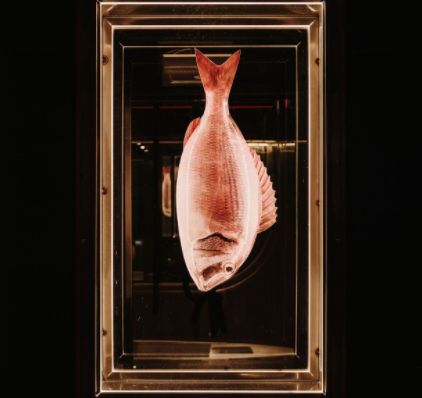
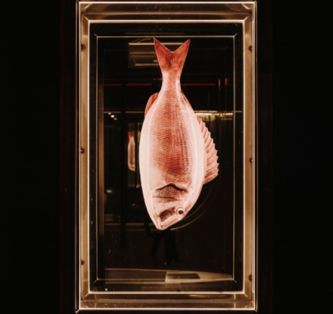

发布人:小何

Lobito de Mar餐厅位于马德里市中心的萨拉曼卡高档区，从美食和概念上都为这座内陆的 西班牙首都带来地中海海滨风情。由巴塞罗那的室内设计公司Astet Studio设计,两层楼的场地 受到马拉加美丽的海岸线的启发，洋溢着海洋色调和质感，水生图像和海洋元素.
设计师在餐厅的用餐露台上采用了概念性的方法，在餐厅的露台上，木质结构支撑着深蓝色的 半透明织物，在桌子上方盘旋时给人以海浪的感觉。空间被自然色和木质纹理所包围，被定制的船 形顶灯所主导，进一步强化了海景主题。在底楼,主用餐区被构想为两个截然不同却又互为补充的 区域,一个区域唤起了马拉加鱼类市场的凉爽魅力，另一个区域则唤起了传统造船厂的精湛技艺。
该餐厅的下层包括两个连续的私人用餐空间，第一个用餐区欢迎客人进入船体，第二个用餐区 将客人运送到海底。第一个饭厅以弯曲的木材屋顶结构为主导，上面涂有鲜亮的勃艮第红色，给人 的感觉是您已踏进木船，窗状的背光墙板和镜子使错觉更加明显。
在底楼，主用餐区被构想为两个截然不同却又互为补充的区域，一个区域唤起了马拉加鱼类市 场的凉爽魅力，另一个区域则唤起了传统造船厂的精湛技艺。前部空间以蓝色和白色色调的圆形吧 台为中心，主要由凉爽的材料（如花岗岩，水磨石和拉丝钢）编织而成，并在胡桃木镶板，粉刷成 白色的木质天花板横梁和白色编织织物中交织出更柔软的质感。模仿的渔网：晚上，编织的织物面 板被彩色霓虹灯照亮，将高档鱼市场的氛围换成了休闲氛围。
 

卫生间受到了原始的鱼贩工业氛围的启发，构思新颖。该空间以一个由陈旧混凝土制成的类似 槽的大型水槽为中心，被透明的工业窗帘围绕着，而小隔间则以冷藏鱼为标志。最终，正是这种对 每个细节的活泼的关注使Lobito de Mar成为了独一无二的发现体验。
项目面积：466平方米 项目类型：餐饮空间 完成时间：2019
设计公司：Astet Studio 摄 影：Salva Lopez